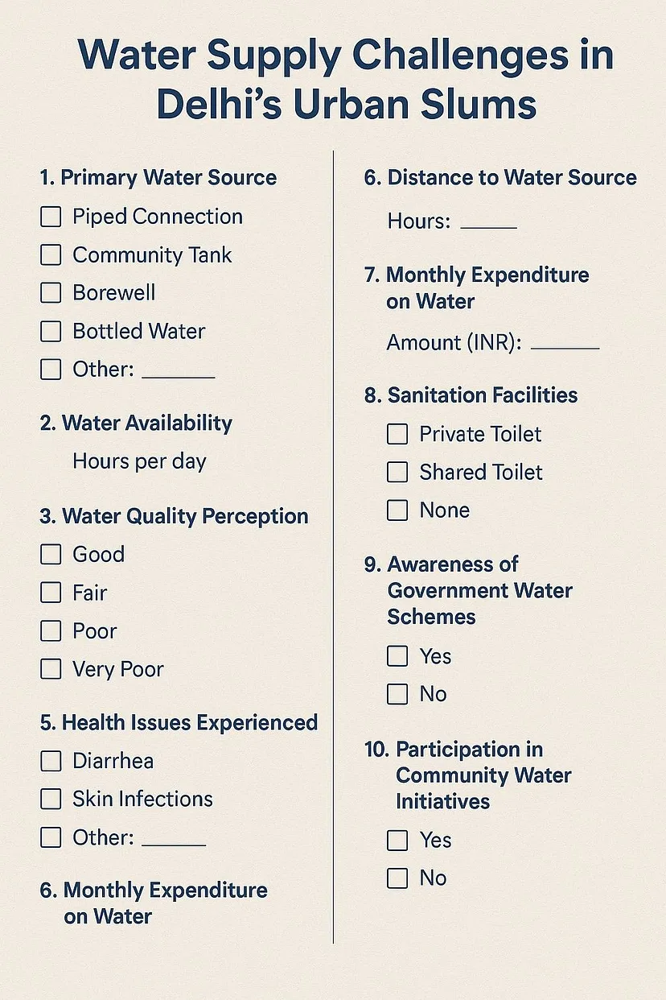
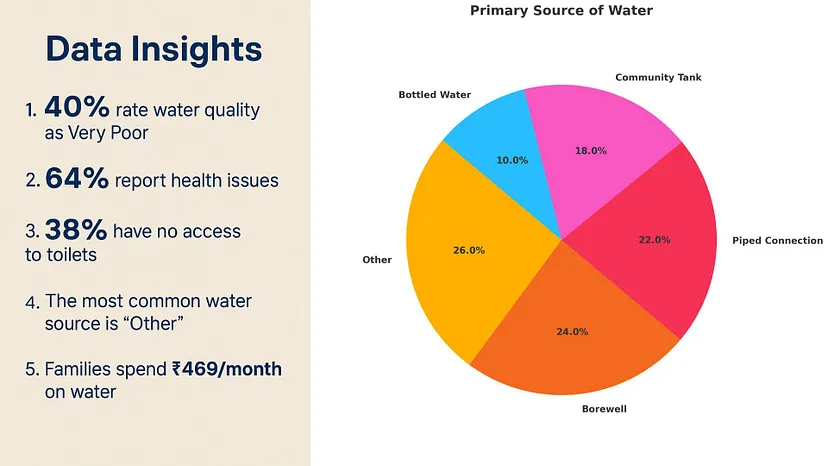
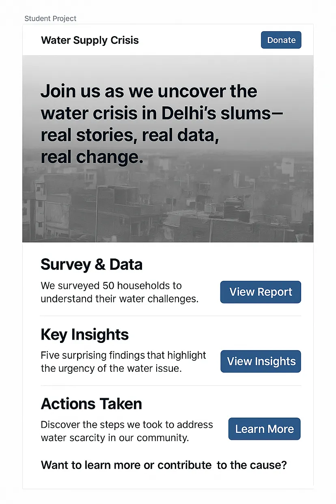
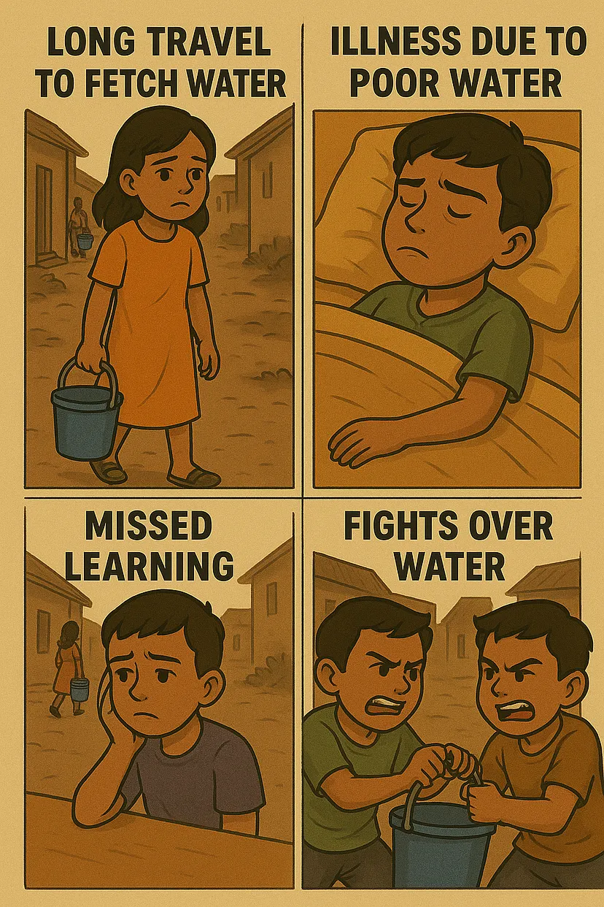

AI Belongs in the Classroom
How schools can teach students to harness AI effectively
Over the past few years, generative AI advancements have democratized its use, making it easier to boost productivity and creativity. Today, schools must not just teach students what AI is — they must teach them how to use it. In this article, we propose a curriculum to do exactly that.
INTRODUCTION
Today, anyone — and I mean anyone — from a 6-year-old to an 80-year-old, can use AI to gain an edge. India has nearly half a billion people under the age of 18. For them, learning to leverage AI isn’t optional; it’s essential for being employable and exceptional in tomorrow’s world.
Schools have a massive opportunity (and responsibility) to equip students with this powerful tool.
The Indian school curriculum is robust — it includes projects, group activities, and even holiday homework. But here’s the thing: AI tools like ChatGPT, Google’s Vertex AI, and others can now multiply the quality and creativity of student output. It’s time schools move away from boring, static formats and embrace dynamic, new-age expressions.
Why ask kids to make a plain chart on climate change when they can create an engaging AI-generated video animation, with far less effort and way more impact?
When we say learning AI, we don’t mean writing code or diving deep into technical complexities. The goal is simple: learn to use readily available tools that harness AI to transform how students think, create, analyze, and present their work.
Let’s look at the curriculum now.
CURRICULUM
The guiding principle behind an AI-based curriculum should rest on 3 prongs — Conscience, Competence, and Creativity.
- Deepen conscience toward society and nation
- Sharpen problem-solving competency
- Amplify creativity to make presentations stand out
These are the three prongs of our AI Trident.
In this article, I will highlight an example project that incorporates all three prongs.
Consider this:
My brother attends a posh school in South Delhi, where most students come from affluent backgrounds. What’s unique about Delhi is how urban slums often coexist right next to upscale residential colonies — these settlements provide essential human labor that supports elite lifestyles.
These urban slums face a multitude of problems, with erratic water supply being one of the foremost.
The school assigns 9th-grade students a holiday homework project focused on this issue. Each student is tasked with preparing a report on the water supply crisis in nearby slum areas, recommending actionable steps that society can take. Each student is allocated a slum dwelling in proximity to their residence to encourage firsthand observation and community engagement.
We will use this example throughout the article.
CONSCIENCE
School projects often nudge students toward broad issues like climate change and women’s safety. But with AI, we can shift the lens closer to home. Local issues — once overlooked — become powerful learning opportunities, as research, survey design, and data analysis are now just a prompt away.
In our example, students can use the following prompt on ChatGPT:
PROMPT: I want to design a questionnaire regarding the water supply issue in an urban slum in Delhi. What are the things I should focus on?
ChatGPT's RESPONSE: It provides guiding principles along with a sample questionnaire, which I asked to be turned into a poster, shown below.

The above can be digitized on Google Forms, allowing students to record answers and collate responses in minutes!
COMPETENCE
Let me throw in a cliché: “Data is the new oil.” If data is oil, kids must learn to refine it.
Teaching data analysis may seem tough, but with tools like ChatGPT, kids can analyze data in plain English.
For example, kids collect the questionnaire responses and collate them like shown here:

They can then prompt ChatGPT:
PROMPT: Based on the data, give me the top 5 insights and analysis. Also, make a pie chart of the primary sources of water.
ChatGPT's RESPONSE: It gave the top 5 insights and a pie chart.

Notably, a large portion is labeled 'Other' because students missed including water tankers as an option — a valuable lesson in survey design!
Additionally, using Google Gemini’s research capabilities, kids can augment their survey quickly:
PROMPT: I want to research the water crisis in Delhi’s Urban Slums and its effect on lives and livelihoods. Include data and facts.
ChatGPT's RESPONSE: It generated a report with key facts and data.
Building these skills sharpens critical thinking and problem-solving, laying the foundation for independent learning.
CREATIVITY
A hundred years ago, students used charts to present ideas. Sadly, this format has remained unchanged in many developing countries.
Charts serve as good non-screen modes of learning, but relying solely on them reflects a lack of progress.
Today, students can express their ideas in richer, more engaging formats.
For instance, instead of traditional charts, students could design a website to showcase their project.
PROMPT: I want to design a homepage as a student project submission on the topic “Water Supply Crisis in Delhi’s Urban Slums.” Please generate a Figma-style mockup.
ChatGPT's RESPONSE:

Advanced tools like Google’s Vertex Studio can help students even create videos to embed in their websites.
Even if the output needs to be static, tools like ChatGPT can make them more appealing.
For example, create a comic-style representation:
PROMPT: Create a comic-style layout showing the effects of poor-quality water supply on children in urban slums.
ChatGPT's RESPONSE:

Creativity remains a human trait, but AI boosts students' imaginations — offering more ways to remix and innovate.
CONCLUSION
The AI Trident — Conscience, Competence, and Creativity — leads to AI-augmented learning.
While many fear that AI might dull thinking, the opposite is true: AI amplifies human thought, empowering students to explore new areas.
To truly harness AI’s potential, schools must introduce a dedicated AI curriculum, covering:
- Fundamentals of AI systems
- Prompt engineering
- Iteration techniques
- Overview of available tools
Just like we once taught kids how to use the Internet or PowerPoint, it’s time to teach them to collaborate with AI.
At the end of the day, the human remains the master.
As the iconic line from Koi Mil Gaya goes:
“Computer ne insaan ko nahi banaya hai … insaan ne computer ko banaya hai … is liye joh dimaag kar sakta hai, woh aapka computer nahi kar sakta hai."
The story of AI is no different — it’s not here to replace human thought, but to elevate it. In the hands of curious students, AI becomes a thinking partner — one that helps them analyze, imagine, and express in ways we couldn’t have imagined a decade ago.